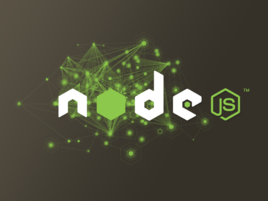

Toggle navigation
Welcome
to Shudery's blog
!
Home
Life
Essay
Photos
Insights
Sports & Music
travel
Works
Web
Serve
Internet
GitHub
UESTC
sign in

Node.js那些事
去年12月，多位重量级Node.js开发者不满Joyent对Node.js的管理，自立门户创建了io.js。io.js的发展速度非常快，先是于2015年1月份发布了1.0版本，并且很快就达到了2.0版本，社区非常活跃。而最近io.js社区又宣布，这两个项目将合并到Node基金会下，并暂时由“Node.js和io.js核心技术团队联合监督”运营。本文将聊一聊Node.js项目的一些历史情况，与io.js项目之间的恩怨纠葛，他们将来的发展去向。希望能从历史的层面去了解这个开源项目在运营模式上是如何演变和发展的。 Node.js项目的由来 自从JavaScript被Brendan Eich创造出来后，除了应用在浏览器中作为重要的补充外，人类从来就没有放弃过将JavaScript应用到服务端的想法。这些努力从livewired项目（1994年12月）开始，就从来没有停止过。如果你不知道livewired，那应该知道ASP中可以使用JScript语言（1996年），或者Rhino。但直到2009年，这些服务端JavaScript技术与同样应用在服务端的Java、PHP相比，显得相对失色。 谈到Node.js的由来，不可避免要聊到它的创始人Ryan Dahl。在2009年时，服务端JavaScript迎来了它的拐点，因为Ryan Dahl带来了Node.js，在那之后Node.js将服务端JavaScript带入了新的境地，大量的JavaScript在GitHub上被贡献出来，大量的JavaScript模块出现，出现了真正的繁荣。 Node.js不是凭空出现的项目，也不是某个Web前端工程师为了完成将JavaScript应用到服务端的理想而在实验室里捣鼓出来的。它的出现主要归功于Ryan Dahl历时多年的研究，以及一个恰到好处的节点。2008年V8随着Chrome浏览器的出世，JavaScript脚本语言的执行效率得到质的提升，这给Ryan Dahl带来新的启示，他原本的研究工作与V8之间碰撞出火花，于是带来了一个基于事件的高性能Web服务器。 Ryan Dahl的经历比较奇特，他并非科班出身的开发者，在2004年的时候他还在纽约的罗彻斯特大学数学系读博士，期间有研究一些分形、分类以及p-adic分析，这些都跟开源和编程没啥关系。2006年，也许是厌倦了读博的无聊，他产生了『世界那么大，我想去看看』的念头，做出了退学的决定，然后一个人来到智利的Valparaiso小镇。那时候他尚不知道找一个什么样的工作来糊口，期间他曾熬夜做了一些不切实际的研究，如如何通过云进行通信。下面是这个阶段他产出的中间产物，与后来苹果发布的iCloud似乎有那么点相似。 从那起，Ryan Dahl不知道是否因为生活的关系，他开始学习网站开发了，走上了码农的道路。那时候Ruby on Rails很火，他也不例外的学习了它。从那时候开始，Ryan Dahl的生活方式就是接项目，然后去客户的地方工作，在他眼中，拿工资和上班其实就是去那里旅行。此后他去过很多地方，如阿根廷的布宜诺斯艾利斯、德国的科隆、奥地利的维也纳。 Ryan Dahl经过两年的工作后，成为了高性能Web服务器的专家，从接开发应用到变成专门帮客户解决性能问题的专家。期间他开始写一些开源项目帮助客户解决Web服务器的高并发性能问题，尝试过的语言有Ruby、C、Lua。当然这些尝试都最终失败了，只有其中通过C写的HTTP服务库libebb项目略有起色，基本上算作libuv的前身。这些失败各有各的原因，Ruby因为虚拟机性能太烂而无法解决根本问题，C代码的性能高，但是让业务通过C进行开发显然是不太现实的事情，Lua则是已有的同步I/O导致无法发挥性能优势。虽然经历了失败，但Ryan Dahl大致的感觉到了解决问题的关键是要通过事件驱动和异步I/O来达成目的。 在他快绝望的时候，V8引擎来了。V8满足他关于高性能Web服务器的想象： 没有历史包袱，没有同步I/O。不会出现一个同步I/O导致事件循环性能急剧降低的情况。 V8性能足够好，远远比Python、Ruby等其他脚本语言的引擎快。 JavaScript语言的闭包特性非常方便，比C中的回调函数好用。 于是在2009年的2月，按新的想法他提交了项目的第一行代码，这个项目的名字最终被定名为“node”。 2009年5月，Ryan Dahl正式向外界宣布他做的这个项目。2009年底，Ryan Dahl在柏林举行的JSConf EU会议上发表关于Node.js的演讲，之后Node.js逐渐流行于世。 以上就是Node.js项目的由来，是一个专注于实现高性能Web服务器优化的专家，几经探索，几经挫折后，遇到V8而诞生的项目。 Node.js项目的组织架构和管理模式 Node.js随着JSConf EU会议等形式的宣传下，一家位于硅谷的创业公司注意到了该项目。这家公司就是Joyent，主要从事云计算和数据分析等。Joyent意识到Node.js项目的价值，决定赞助这个项目。Ryan Dahl于2010年加入该公司，全职负责Node.js项目的开发。此时Node.js项目进入了它生命历程里的第二个阶段：从个人项目变成一个公司组织下的项目。 这个阶段可以从2010年Ryan Dahl加入Joyent开始到2014年底Mikeal Rogers发起Node Forward结束，Node的版本也发展到了v0.11。这个时期，IT业中的大多数企业都关注过Node.js项目，如微软甚至对于Node.js对Windows的移植方面做过重要的贡献。 这个时期可以的组织架构和管理模式可以总结为“Gatekeeper ＋ Joyent”模式。 Gatekeeper的身份类似于项目的技术负责人，对技术方向的把握是有绝对权威。历任的Gatekeeper为：Ryan Dahl、Isaac Z. Schlueter、Timothy J Fontaine，均是在Node.js社区具有很高威望的贡献者。项目的法律方面则由Joyent负责，Joyent注册了“Node.js”这个商标，使用其相关内容需要得到法律授权（如笔者《深入浅出Node.js》上使用了Node.js的Logo，当时是通过邮件的形式得到过授权）。技术方面除了Gatekeeper外，还有部分core contributor。core contributor除了贡献重要feature外，帮助项目进行日常的patch提交处理，协助review代码和合并代码。项目中知名的core contributor有Ben Noordhuis，Bert Belder、Fedor Indutny、Trevor Norris、Nathan Rajlich等，这些人大多来自Joyent公司之外，他们有各自负责的重要模块。Gatekeeper除了要做core contributor的事情外，还要决定版本的发布等日常事情。 Node.js成为Joyent公司的项目后，Joyent公司对该项目的贡献非常大，也没有过多的干涉Node.js社区的发展，还投入了较多资源发展它，如Ryan Dahl、Isaac Z. Schlueter、Timothy J Fontaine等都是Joyent的全职员工。 Node.js社区的分裂 “Gatekeeper ＋ Joyent”模式运作到2013年的时候都还工作良好，蜜月期大概中止于第二任Gatekeeper Isaac Z. Schlueter离开Joyent自行创建npm inc.公司时期。前两任Gatekeeper期间，Node.js的版本迭代都保持了较高的频率，大约每个月会发布一个小版本。在Isaac Z. Schlueter卸任Gatekeeper之后，Node.js的贡献频率开始下降，主要的代码提交主要来自社区的提交，代码的版本下降到三个月才能发布一个小版本。社区一直期待的1.0版本迟迟不能发布。这个时期Node.js属于非常活跃的时期，但是对于Node.js内核而言却进展缓慢。技术方向上似乎是有些不明朗，一方面期待内核稳定下来，一方面又不能满足社区对新feature的渴望（如ES6的特性迟迟无法引入）。 第三任的Gatekeeper Timothy J Fontaine本人也意识到这个问题。从他上任开始，主要的工作方向就是解决该问题。他主要工作是Node on the road活动，通过一系列活动来向一些大企业用户获取他们使用Node.js的反馈。通过一些调研，他做了个决定，取消了贡献者的CLA签证，让任何人可以贡献代码。 尽管Timothy J Fontaine的做法对Node.js本身是好的，但是事情没有得到更好的改善。这时候Node.js项目对社区贡献的patch处理速度已经非常缓慢，经常活跃的core contributor只有Fedor Indutny、Trevor Norris。另外还发生了人称代词的事件，导致Node.js/libuv项目中非常重要的贡献者Ben Noordhuis离开core contributor列表，这件事情被上升到道德层面，迎来了不少人的谩骂。其中Joyent的前任CEO甚至还致信表示如果是他的员工，会进行开除处理。这致使Node.js项目的活跃度更低。Node.js的进展缓慢甚至让社区的知名geek TJ Holowaychuk都选择离开Node.js而投入Go语言的怀抱。 可以总结这个时期是“Gatekeeper ＋ Joyent”模式的末期。Joyent对于项目的不作为和其他层面对社区其他成员的干预，导致项目进展十分缓慢，用蜗牛的速度来形容一点也不为过。尽管Timothy J Fontaine试图挽回些什么，也有一些行为来试图重新激活这个项目的活力，但是已经为时已晚。 这时一个社区里非常有威望的人出现了，他就是Mikeal Rogers。Mikeal Rogers的威望不是建立在他对Node.js项目代码的贡献上，他的威望主要来自于request模块和JSConf会议。其中JSConf是JavaScript社区最顶级的会议，他是主要发起人。 在2014年8月，以Mikeal Rogers为首，几个重要core contributor一起发起了一个叫做“Node forword”的组织。该组织致力于发起一个由社区自己驱动来提升Node、JavaScript和整个生态的项目。